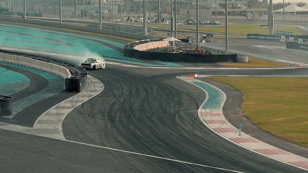

Gang gang Travis Scott
Réalisation d'un clip vidéo fictif
Le but de ce projet était de réaliser un clip vidéo en utilisant uniquement des vidéos de stock (libre de droits), pour essayer de faire quelque chose de cohérent et correspondant à l'univers du rappeur Travis Scott
J'ai repris les codes originaux du clip (voitures de sport) pour me l'approprier et crée un autre univers. Tout en gardant l'idée générale.
Ce projet à impliqué la recherche de plan, essayé de trouver une cohérence entre les différentes vidéos et également de la retouche colorimétrique afin de faire matcher les couleurs et l'ambiance
Durée : Projet réalisé en 2 semaines
Cible : Projet personnel
Diffusion : Youtube
Techniques : Adobe Première Pro / Adobe After Effects